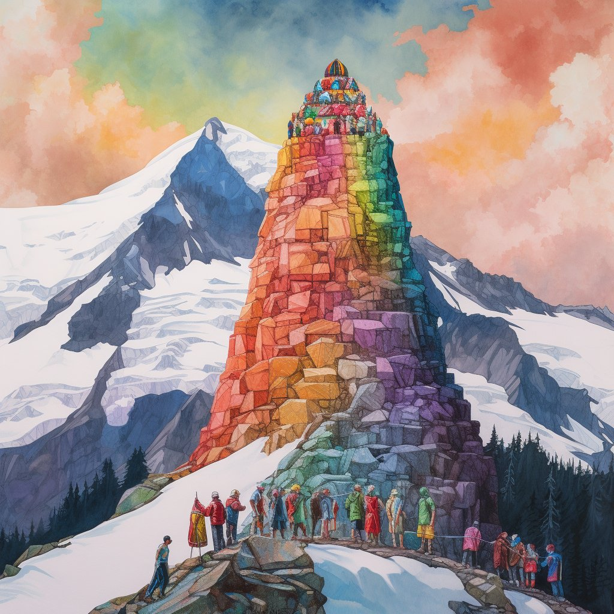
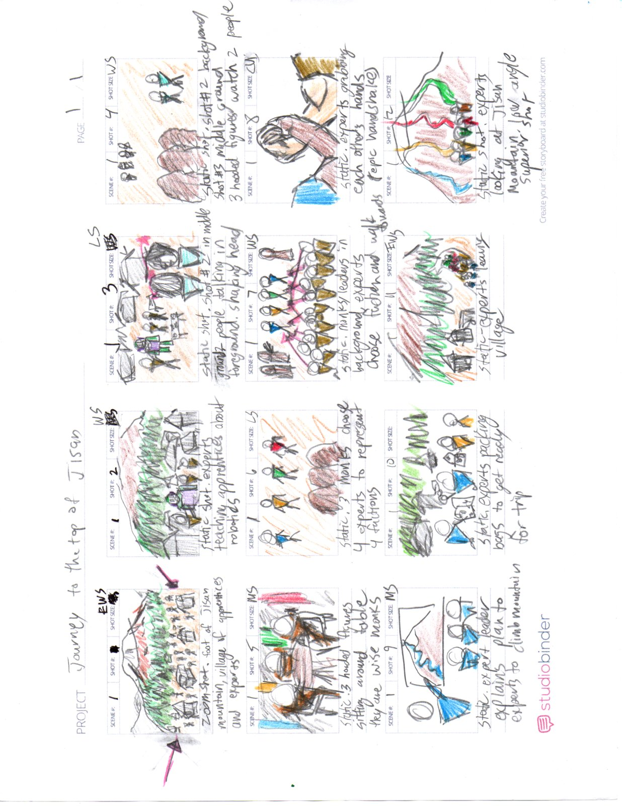
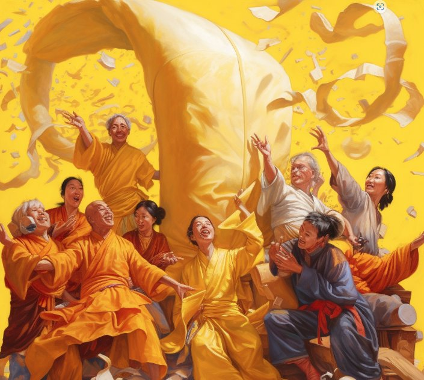
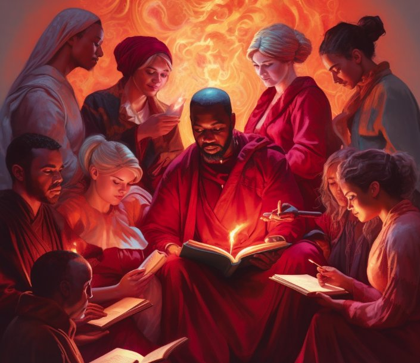
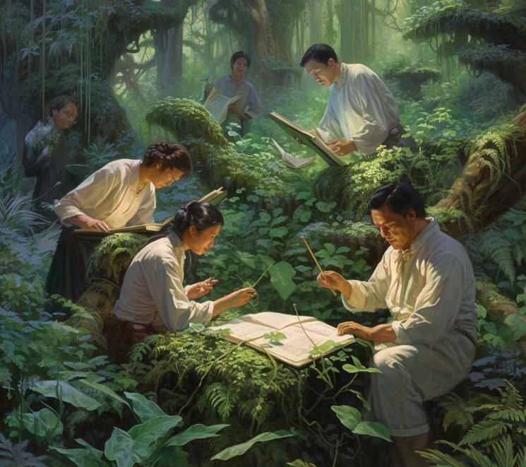
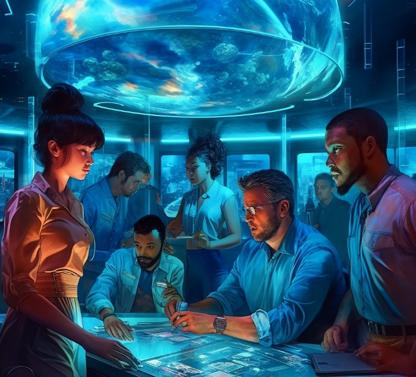
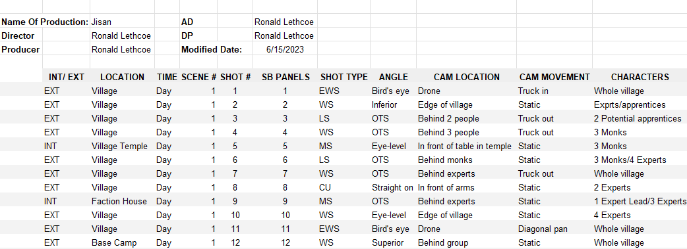

130.1, 130.2, 130.3, 130.5, 130.6 - DED130 Storyboard Presentation.pptx
Slide 1
M08A02 – Final: Storyboard Presentation Ronald Lethcoe 06/15/2023 DED130 – Storyboarding
6/15/2023
ded130_m08a02_final_rlethcoe
1

Image created in Midjourney. See alt-text for prompt
Slide 2
Contents
6/15/2023
ded130_m08a02_final_rlethcoe
2
Slide 3

6/15/2023
ded130_m08a02_final_rlethcoe
3
Zoom in shot. Foot of Jisan Mountain. Village of experts and apprentices working
Static shot. Experts teaching apprentices about robotics
Zoom out shot. Inferior angle. 2 people talking and shaking their heads.
Zoom out shot. Inferior angle. 3 people hooded figures watch 2 people
Static shot. Eye level. Hooded figures are monks talking at the table about factions
Static shot. 3 monks choose 4 experts to represent 4 different factions
Slide 4
6/15/2023
ded130_m08a02_final_rlethcoe
4
Zoom out shot. Monks and leaders in the BG, experts choose faction and walk to
Static shot. Experts grabbing each other’s hands (epic handshake easter egg)
Static shot. Expert leader explains plan to experts to climb mountain
Static shot. Experts packing bag to get ready for trip
Pan up shot. Experts leaving village towards mountain
Static shot. Superior angle. Experts at base camp looking up at Jisan
WS
LS
Slide 5




Midjourney Prompt: /imagine diverse adults in yellow, arranging large floating scrolls in the air. James Gurney style --v 5.1
Midjourney Prompt: /imagine diverse adults in blue, interacting with holographic screens and interfaces. James Gurney style --v 5.1
MJ Prompt: /imagine diverse adults in red, channeling a flame to transcribe knowledge from an ancient book. James Gurney style
Midjourney Prompt: /imagine diverse adults in green, examining scrolls amidst a lush vegetation. James Gurney style --v 5.1
✔
✔
5.1
5.2
5.3
5.4
Jisan
5: Faction Exposition
1 1
Note: each faction represents a different elemental magic and corresponding color. These shots would montage as the monks discuss each one.
✔
✔
6/15/2023
ded130_m08a02_final_rlethcoe
5
Slide 6
